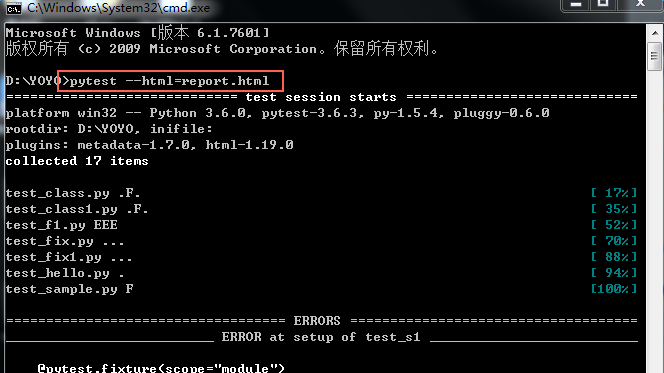
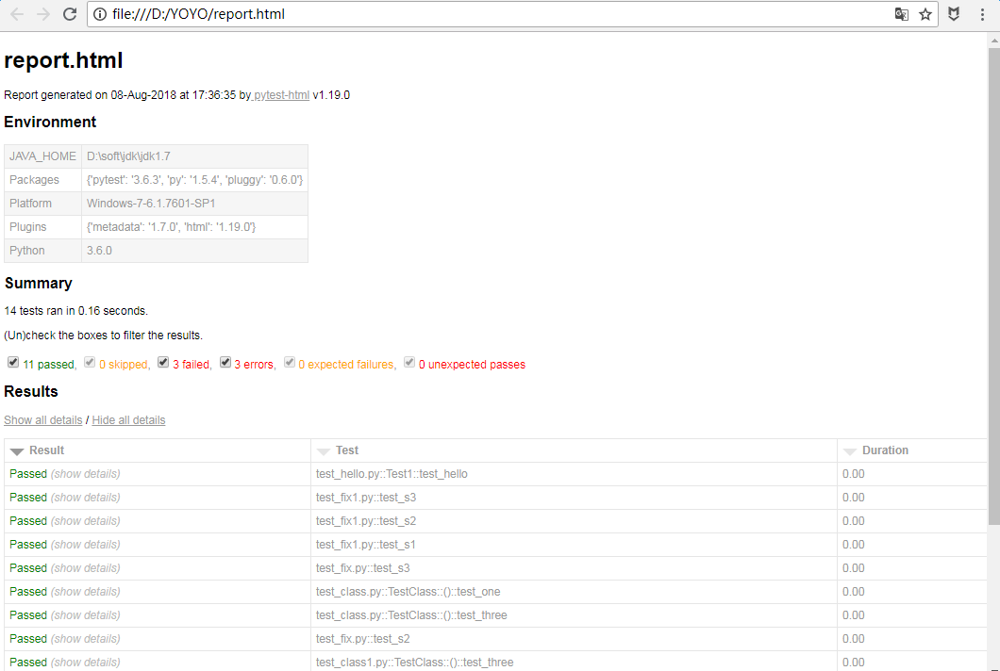
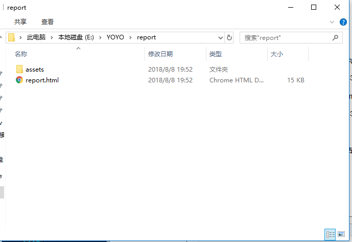
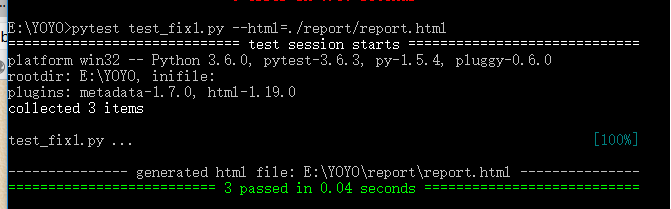

前言
pytest-HTML是一个插件，pytest用于生成测试结果的HTML报告。兼容Python 2.7,3.6
pytest-html
1.github上源码地址【https://github.com/pytest-dev/pytest-html】
2.pip安装
$ pip install pytest-html

3.执行方法
$ pytest --html=report.html
html报告
1.打开cmd，cd到需要执行pytest用例的目录，执行指令：pytest --html=report.html

2.执行完之后，在当前目录会生成一个report.html的报告文件，显示效果如下

指定报告路径
1.直接执行"pytest --html=report.html"生成的报告会在当前脚本的同一路径，如果想指定报告的存放位置，放到当前脚本的同一目录下的report文件夹里
pytest --html=./report/report.html
** 作者：上海-悠悠 QQ交流群：588402570**

2.如果想指定执行某个.py文件用例或者某个文件夹里面的所有用例，需加个参数。具体规则参考【pytest文档2-用例运行规则】

报告独立显示
1.上面方法生成的报告，css是独立的，分享报告的时候样式会丢失，为了更好的分享发邮件展示报告，可以把css样式合并到html里
$ pytest --html=report.html --self-contained-html